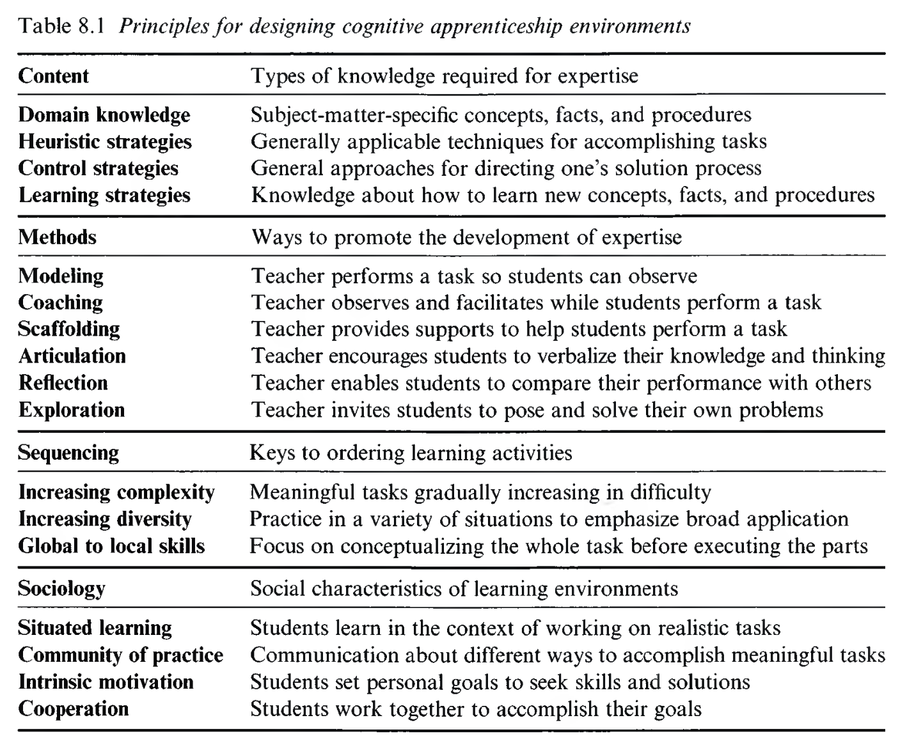

Cognitive Apprenticeship
인지적 도제 이론: 전문가 사고의 가시화(Making Thinking Visible)와 생산적 실패(Productive Failure)
👥 저자 및 출처
Allan Collins (Northwestern) & Manu Kapur (ETH Zurich)
『The Cambridge Handbook of the Learning Sciences』 (3rd Ed., 2022, pp. 157–176)
🎯 챕터 핵심 아젠다
- 사고의 가시화: 전문가의 암묵적 인지 과정을 소리 내어 시연
- 4대 설계 차원 (Table 8.1): 내용, 방법, 순서, 사회성
- 6대 교수법: 모델링 ➔ 코칭 ➔ 스캐폴딩 ➔ 명료화 ➔ 반성 ➔ 탐색
- 마누 카푸어의 생산적 실패: 사전 탐색/실패 ➔ 사후 명시적 통합
🎯 강의 목표 및 핵심 맥락 (Context & Goal)
본 장은 전통적 장인 도제의 도제식 전수 모델을 학교의 인지적 학술 영역(수학, 독해, 코딩)에 성공적으로 이식한 '인지적 도제 이론'과 그 현대적 진화인 '생산적 실패(Productive Failure)'를 탐구합니다.
📖 원문 심층 학술 해설 (Detailed Academic Commentary)
앨런 콜린스(Allan Collins)는 존 실리 브라운(John Seely Brown)과 함께 인지적 도제 이론을 창시한 거장이며, 마누 카푸어(Manu Kapur)는 생산적 실패 이론을 통해 인지적 도제를 21세기형 심층 전이 학습으로 도약시킨 석학입니다.
💡 수업/세미나 진행 팁 & 질문 가이드
"우리는 왜 학교에서 배운 지식을 실생활이나 실무 문제에 마주했을 때 전혀 쓰지 못할까요?"라는 질문으로 시작하세요.
인지적 도제 이론(Cognitive Apprenticeship)이란?
보이지 않는 전문가의 인지적·메타인지적 사고 과정을 눈앞에 가시화하는 교수설계
🔍 핵심 목표: 사고의 가시화 (Making Thinking Visible)
- 전문가는 문제 해결 시 뇌 속에서 복잡한 의사결정과 디버깅을 수행함
- 그러나 학생 눈에는 최종 정답 결과물만 보임 (인지적 블랙박스)
- 소리 내어 생각하기(Think-aloud)를 통해 뇌 속의 추론 과정을 외재화
🛠️ 도제식 전수 메커니즘의 학술적 이식
- 물리적 공방의 관찰 ➔ 코칭 ➔ 페이딩(Fading)을 교실로 도입
- 독해, 작문, 수학적 증명, 소프트웨어 엔지니어링 훈련에 적용
- 초보자가 전문가 실천 공동체의 문화로 진입하도록 안내 (Collins et al., 1989)
🎯 강의 목표 및 핵심 맥락
인지적 도제 이론의 학문적 정의와 '사고의 가시화'가 왜 현대 학교 교육의 가장 결정적인 혁신인지 규명합니다.
📖 원문 심층 학술 해설
교사가 칠판에 완성된 정답 코드나 수학 증명만 적어주면 학생들은 전문가가 그 답을 도출하기까지 겪은 수많은 시행착오와 메타인지적 조절을 전혀 배울 수 없습니다.
💡 수업/세미나 진행 팁 & 질문 가이드
교사가 문제를 풀다가 "어, 이게 왜 안 되지? 아, 이 조건 때문이구나"라며 혼잣말로 푸는 것이 학생들에게 얼마나 유익한지 나누어 보세요.
전통적 도제 vs 현대 학교 vs 인지적 도제
학습의 물리적 가시성, 맥락성, 지식 전이의 비교
| 비교 기준 | 전통적 도제 (Traditional) | 전통적 학교 (Schooling) | 인지적 도제 (Cognitive) |
|---|---|---|---|
| 과제의 성격 | 물리적 수공예 기술 (목공, 재단) | 탈맥락화된 교과서 지식 암기 | 실제적 복합 인지 문제 해결 |
| 사고의 가시성 | 손동작과 도구 사용이 눈에 보임 | 최종 정답/시험 점수만 가시화 | 사고 과정(Think-aloud)의 가시화 |
| 학습 맥락 | 실제 공방의 진정한 작업 맥락 | 인위적이고 단절된 교실 | 실제적 문제 해결 맥락으로 재맥락화 |
| 지식의 전이 | 특정 공방 기술에 국한 (근거리) | 불활성 지식으로 전이 실패 | 다양한 맥락의 원거리 전이(Far) |
🎯 강의 목표 및 핵심 맥락
전통적 도제, 전통적 학교, 인지적 도제의 핵심 속성을 4대 축에서 비교합니다.
📖 원문 심층 학술 해설
인지적 도제는 전통 도제의 '실제적 맥락'이라는 강점을 취하면서도, 전통 도제가 지닌 '특정 환경에의 기술 고착' 한계를 극복하기 위해 지식의 유연한 일반화와 전이를 추구합니다.
💡 수업/세미나 진행 팁 & 질문 가이드
학교 교육이 왜 종종 '실생활에서 써먹지 못하는 헛배움'이 되는지 불활성 지식 개념과 연결해 보세요.
탈맥락화의 폐해와 '불활성 지식(Inert Knowledge)'
시험은 100점이지만 실제 문제 앞에서는 굳어버리는 지식의 비극
🚫 불활성 지식 (Inert Knowledge, Whitehead)
- 머릿속에 저장되어 시험 문제에는 인출되지만
- 실제 생활과 복합적 문제 상황에서는 활성화되지 못함
- 원인: 지식이 실제 사용되는 조건과 목적(조건화된 지식)을 배우지 못했기 때문
💡 인지적 도제의 해결책: 상황화와 재맥락화
- 지식을 실제 사용 맥락(Authentic Context)과 유기적으로 결합
- "언제, 왜 이 전략을 사용해야 하는가?"라는 조건적 지식(Conditional Knowledge) 체화
- 실제 실천 공동체의 진정한 과제에 도전시킴
🎯 강의 목표 및 핵심 맥락
화이트헤드(Whitehead)가 경고한 '불활성 지식(Inert Knowledge)'의 실체를 규명하고 인지적 도제의 상황화 전략을 제시합니다.
📖 원문 심층 학술 해설
조건화되지 않은 개념(예: 미분 공식, 이진 탐색 알고리즘)은 창고에 쌓인 물건과 같습니다. 인지적 도제는 지식의 '언제/왜(When/Why)'라는 조건적 지식을 함께 가르칩니다.
💡 수업/세미나 진행 팁 & 질문 가이드
운전면허 필기시험 100점인 사람이 실제 도로에서 당황하는 이유를 비유로 들어 설명하세요.
사고의 가시화 (Making Thinking Visible)
암묵적 인지 과정을 말과 그림으로 드러내어 관찰 가능하게 만든다
🗣️ 교사의 사고 가시화 (Modeling)
- 소리 내어 생각하기 (Think-aloud)
- 문제를 처음 읽었을 때의 당혹감과 가설 수립 과정
- 막혔을 때 전략을 전환하는 메타인지적 혼잣말 시연
- "전문가도 고민하고 디버깅한다"는 것을 보여줌
📝 학생의 사고 가시화 (Articulation)
- 개념적 설명과 논리 외재화
- 자신의 풀이 과정과 코딩 이유를 동료에게 말로 설명
- 머릿속의 어설픈 직관을 정교한 언어적 멘탈 모델로 정립
- 교사가 학생의 오개념과 인지적 병목을 즉각 포착
🎯 강의 목표 및 핵심 맥락
'사고의 가시화'가 교사(모델링)와 학생(명료화) 양방향에서 어떻게 작동하는지 분석합니다.
📖 원문 심층 학술 해설
인간의 인지는 언어로 표현될 때 비로소 대상화(Objectified)되어 스스로 점검하고 수정할 수 있는 성찰의 재료가 됩니다.
💡 수업/세미나 진행 팁 & 질문 가이드
교실에서 '고무오리 디버깅'이나 짝 설명 활동을 도입했을 때 학생들이 얻는 인지적 이점을 설명하세요.
인지적 도제 환경 설계를 위한 4대 차원 (Table 8.1)
내용(Content), 방법(Method), 순서(Sequencing), 사회성(Sociology)의 17개 원리
🏛️ 4대 설계 차원 개요
- 1. 내용 (Content): 교과 + 휴리스틱 + 통제 + 학습 전략
- 2. 방법 (Method): 모델링, 코칭, 스캐폴딩, 명료화, 반성, 탐색
- 3. 순서 (Sequencing): 복잡성·다양성 점증, 전체 ➔ 부분
- 4. 사회성 (Sociology): 상황학습, CoP, 내적동기, 협동

🎯 강의 목표 및 핵심 맥락
원서 Table 8.1을 통해 인지적 도제 학습 환경의 4대 핵심 차원과 17개 세부 원리의 전체 조망도를 제시합니다.
📖 원문 심층 학술 해설
콜린스와 카푸어는 훌륭한 수업이 단지 '좋은 설명(교수법)'에만 머물지 않고, 지식의 층위(내용), 과제의 흐름(순서), 교실 문화(사회성)가 4중으로 조화를 이루어야 한다고 강조합니다.
💡 수업/세미나 진행 팁 & 질문 가이드
여러분의 수업 설계안을 이 4대 차원 체크리스트로 평가해 보세요.
차원 1: 교육 내용 (Content)의 4대 지식 층위
단순한 교과 개념을 넘어 전문가의 메타인지 통제와 학습 전략까지
1. 교과 지식 (Domain Knowledge)
교과서에 명시된 기본 개념, 사실, 표준 공식 및 절차적 지식
2. 발견적 전략 (Heuristic Strategies)
정형화되지 않은 실전 난제에 직면했을 때 전문가가 쓰는 어림셈, 팁, 문제 분해 노하우
3. 통제 전략 (Control / Metacognition)
과제 진행 상황을 모니터링하고 시간·자원을 배분하며 전략을 수정하는 상위인지 전략
4. 학습 전략 (Learning Strategies)
개념 변화를 일으키고 새로운 전문성을 스스로 습득하는 '배우는 법을 배우는' 메타학습
🎯 강의 목표 및 핵심 맥락
전문가 역량을 구성하는 4대 지식 층위(교과 지식, 휴리스틱, 통제 전략, 학습 전략)를 분석합니다.
📖 원문 심층 학술 해설
대부분의 교실은 1번(교과 지식)만 가르칩니다. 그러나 실제 문제 해결의 승패는 2번(휴리스틱)과 3번(메타인지 통제 전략)에서 갈립니다. 인지적 도제는 이를 명시적 교육 내용으로 끌어올립니다.
💡 수업/세미나 진행 팁 & 질문 가이드
코딩이나 수학에서 여러분만의 '실전 발견적 팁(Heuristics)'을 학생들에게 어떻게 가르치는지 공유하세요.
차원 2: 6대 핵심 교수 방법 (The 6 Methods)
초보자를 독립적 전문가로 이끄는 6단계 교수학적 사다리
1. 모델링 (Modeling)
전문가가 사고 과정을 소리 내어 시연 (Think-aloud)
2. 코칭 (Coaching)
학생의 수행을 실시간 관찰하며 힌트와 피드백 제공
3. 스캐폴딩 (Scaffolding)
임시 인지 비계 투입 및 역량 성장에 따른 점진적 페이딩
4. 명료화 (Articulation)
자신의 지식과 문제 해결 추론을 명확한 언어로 외재화
5. 반성 (Reflection)
자신의 수행을 전문가 및 동료 모델과 대조하여 성찰
6. 탐색 (Exploration)
스스로 새로운 문제를 설정하고 독립적으로 해결
🎯 강의 목표 및 핵심 맥락
인지적 도제의 핵심인 6대 교수 방법의 유기적 흐름과 단계별 역할을 조망합니다.
📖 원문 심층 학술 해설
1~3단계(모델링-코칭-스캐폴딩)는 외부적 지원 단계이며, 4~5단계(명료화-반성)는 메타인지적 내면화 단계이고, 6단계(탐색)는 완전한 자율적 실천 단계입니다.
💡 수업/세미나 진행 팁 & 질문 가이드
다음 3개 슬라이드에서 2개씩 짝을 지어 구체적인 실천 전략을 살펴봅니다.
교수법 1 & 2: 모델링(Modeling)과 코칭(Coaching)
전문가의 뇌 속을 보여주고, 학생의 수행을 곁에서 안내한다
🎭 모델링 (Modeling)
- 교사가 문제를 풀 때 막히는 순간의 심리적 대처 시연
- 가설을 세우고, 검증하고, 기각하는 전 과정을 소리 내어 말함
- 학생은 전문가의 인지적 멘탈 모델(Internal Model)을 관찰·구축
🎯 코칭 (Coaching)
- 학생이 실제 문제를 푸는 동안 옆에서 관찰
- 적시에 힌트(Hints), 단서(Clues), 상기(Reminders) 제공
- 정답을 가로채지 않고 학생 스스로 길을 찾도록 지원
🎯 강의 목표 및 핵심 맥락
모델링(Modeling)과 코칭(Coaching)의 차이점과 상호보완적 역할을 분석합니다.
📖 원문 심층 학술 해설
모델링이 '전문가의 멘탈 모델을 보여주는 입력'이라면, 코칭은 '학생의 멘탈 모델이 실제 작동할 때 궤도를 바로잡아주는 피드백'입니다.
💡 수업/세미나 진행 팁 & 질문 가이드
코칭 시 학생에게 답을 바로 알려주고 싶은 유혹을 참고 '적절한 비계 질문'을 던지는 훈련을 해보세요.
교수법 3 & 4: 스캐폴딩(Scaffolding)과 명료화(Articulation)
임시 비계로 과제를 지탱하고, 언어화를 통해 사고를 명료하게 정립한다
🪜 스캐폴딩과 페이딩 (Fading)
- 과제의 난도를 낮추지 않고 템플릿/도구 비계 제공
- 학생의 수행 능력이 향상되면 비계를 점진적으로 철회(Fading)
- 비계를 걷어내지 않으면 학생의 의존성이 고착됨
🗣️ 명료화 (Articulation)
- 학생이 자신의 추론과 의사결정 근거를 말로 설명
- "왜 이 알고리즘을 선택했니?", "이 조건문의 목적은 뭐지?"
- 암묵적 직관이 체계적 개념으로 정교화됨
🎯 강의 목표 및 핵심 맥락
스캐폴딩의 핵심인 페이딩(Fading)과 명료화(Articulation)의 인지적 효과를 규명합니다.
📖 원문 심층 학술 해설
명료화는 학생이 자신의 지식을 메타인지적으로 모니터링하게 만드는 가장 강력한 도구입니다. 설명할 수 없는 지식은 진정으로 이해한 것이 아닙니다.
💡 수업/세미나 진행 팁 & 질문 가이드
학생들에게 코드를 짠 후 '코드 리뷰 발표(Articulation)'를 시키는 활동의 교육적 가치를 논의하세요.
교수법 5 & 6: 반성(Reflection)과 탐색(Exploration)
전문가 모델과 대조하여 성찰하고, 완전한 자율적 문제 해결사로 도약한다
🪞 반성 (Reflection)
- 자신의 풀이 과정(코드, 증명)을 전문가/동료의 것과 나란히 대조
- "전문가는 어떻게 접근했고, 나는 어디서 비효율적이었는가?"
- 비디오 다시보기나 코드 Diff를 통한 객관적 메타인지 성찰
🚀 탐색 (Exploration)
- 교사의 모든 가이드와 비계가 완전히 제거된 독립 상태
- 학생 스스로 새로운 실세계 문제를 정의하고 가설 수립
- 자신만의 독창적 문제 해결 전략을 자율적으로 전개
🎯 강의 목표 및 핵심 맥락
반성(Reflection)을 통한 멘탈 모델의 정교화와 인지적 도제의 최종 종착지인 탐색(Exploration)을 설명합니다.
📖 원문 심층 학술 해설
인지적 도제의 궁극적 목적은 도제를 평생 교사에게 의존하게 만드는 것이 아니라, 스스로 문제를 정의하고 해결할 수 있는 독립적 탐구자(Autonomous Practitioner)로 길러내는 것입니다.
💡 수업/세미나 진행 팁 & 질문 가이드
수업의 마지막에 학생들에게 자율 캡스톤 프로젝트(탐색)를 부여하는 설계를 토론하세요.
차원 3: 순서 배열 (Sequencing)의 3대 원리
복잡성과 다양성의 점증, 그리고 전체적 조망 우선(Global before Local)
1. 복잡성의 점진적 증가
단순하고 잘 구조화된 과제에서 점차 복잡하고 비구조화된 실세계 과제로 확장
2. 다양성의 점진적 증가
동일한 원리를 매우 상이한 맥락에 적용하여 유연한 원거리 전이(Far Transfer) 획득
3. 전체 조망 우선
Global before Local: 세부 기술을 훈련하기 전에, 시스템 전체의 큰 그림과 목적을 먼저 이해시킴
🎯 강의 목표 및 핵심 맥락
인지적 도제의 순서 배열 3대 원리를 설명하고, 특히 '전체적 조망 우선(Global before Local)'의 중요성을 강조합니다.
📖 원문 심층 학술 해설
전통 교육은 부품(알파벳, 문법, 연산자)부터 가르쳐 학생들이 왜 이것을 배우는지 모릅니다. 인지적 도제는 완성된 완제품 소프트웨어의 큰 그림을 먼저 보여준 후 부품을 가르칩니다.
💡 수업/세미나 진행 팁 & 질문 가이드
웹 개발을 가르칠 때 HTML 태그 암기부터 시키는 것과, 완성된 웹사이트를 보여주고 수정하게 하는 것의 차이를 비교하세요.
차원 4: 사회적 맥락 (Sociology)의 4대 원리
상황 학습, 실천 공동체, 내적 동기, 그리고 협동 학습의 시너지
1. 상황 학습 (Situated Learning)
탈맥락화된 교과서가 아닌 실세계의 실제적 문제 해결 맥락 속에서 학습
2. 실천 공동체 (Community of Practice)
전문가 집단의 문화, 언어, 규범을 자연스럽게 공유하는 학습 공동체 구축
3. 내적 동기 유발 (Intrinsic Motivation)
시험 성적이 아닌 과제 자체의 진정한 가치와 문제 해결의 기쁨에서 동기 부여
4. 협동 학습 활용 (Exploiting Cooperation)
동료 간 상호 스캐폴딩과 짝 프로그래밍을 통해 집단 지성과 다각적 시각 획득
🎯 강의 목표 및 핵심 맥락
학습 환경의 사회문화적 토대를 규정하는 4대 사회성 원리를 분석합니다.
📖 원문 심층 학술 해설
학습은 개인의 두뇌 안에서만 일어나지 않습니다. 지식은 공동체의 실천과 대화 속에 분산되어 있으며(Distributed Cognition), 풍부한 사회적 상호작용 속에서 활성화됩니다.
💡 수업/세미나 진행 팁 & 질문 가이드
교실을 '경쟁적 시험장'에서 '협력적 실천 공동체'로 바꾸기 위한 구체적 방안을 논의하세요.
합법적 주변 참여(LPP)와 전문가 정체성 형성
초보자는 공동체의 주변부에서 중심으로 진입하며 전문가로 변모한다 (Lave & Wenger, 1991)
🌱 합법적 주변 참여 (LPP)
- 초보자는 처음에 사소하지만 실제적인 작업(주변부)을 수행
- 실수해도 전체 시스템에 치명적이지 않은 안전한 참여 보장
- 점차 복잡한 핵심 과제를 맡으며 중심부 실천가(Core Member)로 성장
🪪 전문가 정체성(Identity)의 변혁
- 학습은 단순 지식 습득이 아니라 "내가 어떤 사람이 되어가는가"의 정체성 형성 과정
- "나는 점수 따는 학생이다" ➔ "나는 가치 있는 문제를 해결하는 소프트웨어 엔지니어/과학자이다"
🎯 강의 목표 및 핵심 맥락
장 레이브와 에티엔 벵거(Lave & Wenger, 1991)의 '합법적 주변 참여(LPP)'와 학습자의 정체성 형성 이론을 설명합니다.
📖 원문 심층 학술 해설
오픈소스 프로젝트에 처음 참여할 때 오타 수정(주변부)부터 시작하여 점차 핵심 알고리즘 개발자(중심부)로 성장하는 과정이 완벽한 현대적 LPP의 사례입니다.
💡 수업/세미나 진행 팁 & 질문 가이드
신규 입사자나 신입생이 안전하게 참여할 수 있는 '합법적 주변부 과제'를 어떻게 설계할지 토론하세요.
학습자 공동체(FCL)와 상호적 교수 (Reciprocal Teaching)
교사와 학생이 역할을 바꾸며 메타인지적 독해 전략을 체화한다 (Palincsar & Brown, 1984)
🔄 상호적 교수 (Reciprocal Teaching)
- 4대 독해 전략: 요약하기, 질문하기, 명료화하기, 예측하기
- 교사가 먼저 모델링한 후, 학생이 '교사 역할'을 맡아 소집단 토론을 주도
- 메타인지적 모니터링 능력이 극적으로 향상됨
👥 학습자 공동체 육성 (FCL, Brown & Campione)
- 분산 전문성 (Distributed Expertise): 모둠별로 서로 다른 전문 분야 탐구
- 직소(Jigsaw) 협동 학습: 각 분야 전문가들이 모여 통합 솔루션 구축
- 교실 전체가 하나의 활기찬 연구소로 진화
🎯 강의 목표 및 핵심 맥락
팔린사(Palincsar)와 브라운(Brown, 1984)의 상호적 교수(Reciprocal Teaching)와 FCL 모델의 실천적 가치를 설명합니다.
📖 원문 심층 학술 해설
학생이 교사 역할을 맡아 동료에게 질문하고 요약할 때, 수동적 청자에서 능동적 메타인지 조절자로 역할이 전환됩니다.
💡 수업/세미나 진행 팁 & 질문 가이드
프로그래밍 코드 리뷰 세션에서 학생들이 돌아가며 '리뷰어(교사)' 역할을 맡는 상호적 코칭을 도입해 보세요.
마누 카푸어의 생산적 실패 (Productive Failure)
"정답을 먼저 주지 마라, 먼저 실패하게 한 후 정답을 제시하라" (Kapur, 2008, 2016)
🚫 직접 교수 (Direct Instruction)의 역설
- 정답 공식을 먼저 설명하고 연습 문제를 풀게 함
- 결과: 유사한 연습 문제는 잘 풀지만(근거리 전이), 조금만 변형된 복합 문제에서는 전멸(원거리 전이 실패)
- "이해했다는 착각(Illusion of Understanding)" 유발
💡 생산적 실패 (Productive Failure, PF)
- 정답 공식을 주기 전에 고난도 문제를 먼저 주고 직관으로 도전하게 함
- 필연적인 실패를 통해 자신의 멘탈 모델 한계를 뼈저리게 자각
- 그 후 교사의 정답 강의를 들었을 때 폭발적인 심층 전이(Deep Transfer) 발생
🎯 강의 목표 및 핵심 맥락
마누 카푸어(Manu Kapur)의 '생산적 실패(Productive Failure)'의 정의와 직접 교수의 역설을 밝힙니다.
📖 원문 심층 학술 해설
카푸어는 수많은 무작위 통제 실험(RCT)을 통해, 표준 분산(Standard Deviation)이나 통계 개념을 배울 때 생산적 실패 집단이 직접 교수 집단보다 원거리 전이에서 압도적으로 우수함을 실증했습니다.
💡 수업/세미나 진행 팁 & 질문 가이드
"배고프지 않은 사람에게 진수성찬을 주면 맛을 모르듯, 문제의식을 느끼지 않은 학생에게 정답은 무의미하다"는 비유를 활용하세요.
생산적 실패(PF)의 2단계 교수학적 아키텍처
사전 탐색/실패 ➔ 사후 명시적 개념 통합의 정밀한 순환 구조
1단계: 비안내 탐색 & 직관적 생성
- 고난도 복합 도전 과제 부여 (정답 공식 미제공)
- 학생들이 모둠별로 다양한 직관적 해결책 생성
- 자신의 방법이 가진 모순과 한계에 직면 (실패 경험)
- ➔ 선행 지식 활성화 및 미래 학습 준비(PFL)
2단계: 사후 명시적 개념 통합 강의
- 학생들의 다양한 실패 시도들을 칠판에 대조 분석
- "A모둠의 방식은 왜 이 극단적 케이스에서 실패하는가?"
- 한계를 짚은 후 표준 과학/수학 공식의 필연성을 명시적 설명
- ➔ 지식의 완벽한 개념 통합(Consolidation)
🎯 강의 목표 및 핵심 맥락
생산적 실패의 2단계 구조(1단계 탐색/실패 ➔ 2단계 명시적 통합)의 구체적 실행 절차를 제시합니다.
📖 원문 심층 학술 해설
생산적 실패는 '방임적 발견학습'이 아닙니다. 2단계에서 교사의 매우 강력하고 정교한 명시적 직접 교수(Direct Instruction)가 반드시 결합되어야만 성공합니다.
💡 수업/세미나 진행 팁 & 질문 가이드
2단계에서 학생들의 오답을 '공개적으로 비교 대조'할 때 학생이 상처받지 않도록 긍정적인 학술 담화 문화를 조성하는 법을 논의하세요.
왜 생산적 실패가 직접 교수보다 뛰어난가?
인지적 활성화, 결핍 인식, 그리고 심층 구조의 발견
1. 선행 지식 활성화
문제를 풀기 위해 뇌 속의 모든 관련 직관과 개념을 총동원하여 인지적 회로 활성화
2. 메타인지적 결핍 자각
"내가 무엇을 모르는가"를 정확히 인식하여 교사의 설명에 대한 극도의 주의 집중
3. 심층 구조의 식별
표면적 특징이 아닌 문제의 본질적 인과 메커니즘을 꿰뚫어보아 원거리 전이(Far Transfer) 달성
🎯 강의 목표 및 핵심 맥락
생산적 실패가 인지적·메타인지적 차원에서 심층 전이를 낳는 3대 인과 기제를 규명합니다.
📖 원문 심층 학술 해설
학습자가 실패를 통해 자신의 멘탈 모델에 구멍이 있음을 깨달을 때, 두뇌는 새로운 정보를 받아들일 수 있는 최적의 '수용 상태(Preparation for Future Learning)'가 됩니다.
💡 수업/세미나 진행 팁 & 질문 가이드
자신이 겪었던 가장 고통스러웠지만 결국 가장 큰 배움을 주었던 '생산적 실패' 경험을 나누어 보세요.
생성형 AI 시대의 인지적 도제 멘토 시스템
1:1 맞춤형 모델링, 지능형 코칭, 그리고 적응형 생산적 실패 지원
🤖 AI 페어 프로그래머 & 튜터
- 실시간 사고 모델링: AI가 코드 작성 이유와 디버깅 추론을 설명
- 지능형 소크라테스식 코칭: 정답을 바로 주지 않고 질문으로 학생의 명료화(Articulation) 유도
- 학생 코드와 전문가 코드의 자동 Diff 반성(Reflection) 지원
🥽 몰입형 VR/AR 실천 시뮬레이션
- 의료 수술, 비행 조종, 위험 화학 실험의 안전한 가상 도제 환경
- 치명적 위험 없이 마음껏 실패를 경험하는 궁극의 생산적 실패 공간
🎯 강의 목표 및 핵심 맥락
생성형 AI와 VR/AR 기술이 인지적 도제와 생산적 실패를 어떻게 확장하고 있는지 미래 지평을 분석합니다.
📖 원문 심층 학술 해설
과거에는 1명의 교사가 30명의 학생 모두에게 1:1 코칭을 제공하기 어려웠지만, 이제 LLM 기반 지능형 튜터가 모든 학생에게 개인 맞춤형 인지적 도제 멘토 역할을 수행할 수 있습니다.
💡 수업/세미나 진행 팁 & 질문 가이드
AI가 정답을 바로 알려주는 '게으른 튜터'가 되지 않고 '생산적 실패를 돕는 코치'가 되도록 프롬프트를 설계하는 법을 토론하세요.
인지적 도제 이론 40년의 학술적 유산
학습과학 교수설계의 황금 표준(Gold Standard)으로 자리매김하다
사고의 가시화
전문가의 머릿속 암묵적 지식을 외재화하여 학습의 블랙박스를 해체
통합적 4대 차원
내용, 방법, 순서, 사회성을 아우르는 완벽한 학습 환경 설계 청사진
생산적 실패의 도약
실패를 학습의 걸림돌이 아닌 심층 전이의 최고 디딤돌로 재창조
🎯 강의 목표 및 핵심 맥락
인지적 도제 이론이 지난 40년간 학습과학과 교육공학에 남긴 거대한 학술적 기여를 총괄 정리합니다.
📖 원문 심층 학술 해설
1989년 콜린스 등의 선구적 논문 이후, 인지적 도제는 PBL, 스캐폴딩, 상황 인지, 메타인지 연구를 하나의 거대한 실천적 틀로 통합한 학습과학의 기념비적 이정표가 되었습니다.
💡 수업/세미나 진행 팁 & 질문 가이드
우리의 교육 현장에서 여전히 남아있는 '주입식 강의'를 인지적 도제로 전환하기 위한 로드맵을 제안해 보세요.
Part I 기초 이론 총결산: 참된 배움의 전당을 향하여
학습과학 제1부(Ch 01~08)의 기초 이론 체계를 완성하며
Ch 01~02 태동
깊은 학습, 구성주의, 학제적 융합
Ch 03~04 탐구
스캐폴딩 비계와 PBL 프로젝트
Ch 05~06 인지
메타인지 SRL과 개념 변화(KiP)
Ch 07~08 실천
활동이론과 인지적 도제(PF)
🎯 강의 목표 및 핵심 맥락
Chapter 08과 함께 『The Cambridge Handbook of the Learning Sciences』 제1부 기초 이론(Part I: Foundations, Ch 01~08) 전체를 장엄하게 마무리합니다.
📖 원문 심층 학술 해설
Part I은 인간이 어떻게 깊이 있게 학습하는지에 대한 인지적, 사회문화적, 설계적 기초를 완벽히 구축했습니다. 다음 Part II부터는 이를 연구하는 혁신적 연구 방법론(DBR, 상호작용 분석 등)으로 나아갑니다.
💡 수업/세미나 진행 팁 & 질문 가이드
"Part I에서 배운 8개 챕터의 핵심 원리들을 융합하여 여러분만의 궁극의 미래 교실을 설계해 보세요."